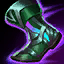
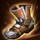
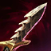
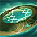
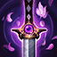
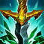
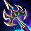
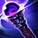
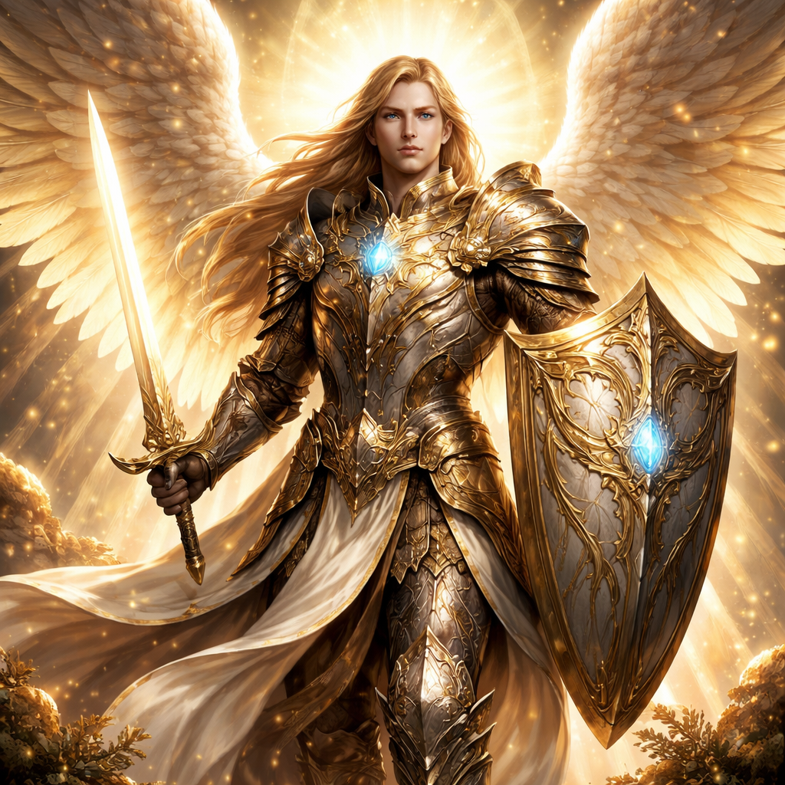

NERFS — ITEMS

Bottes du Sorcier
Bottes du Sorcier
- Pénétration RM (flat) : 5 → 3

Bottes Assassines
Bottes Assassines
- Pénétration armure (%) : 5% → 3%

Dague Destructrice
Dague Destructrice
- Pénétration armure (flat) : 5 → 2,8

Anneau Divin
Anneau Divin
- Pénétration armure (flat) : 7 → 4,5

Lame du Ninja
Lame du Ninja
- Pénétration armure (flat) : 7 → 4,5

Lame Tueuse
Lame Tueuse de Boucliers
- Pénétration armure (flat) : 7 → 4,5

Révolver d'Or
Révolver d'Or
- Pénétration armure (%) : 7% → 4,5%

Lame de Nargoth
Lame de Nargoth
- Pénétration armure (%) : 7% → 4,5%
CHANGEMENTS — ITEMS
Cristal de Vide
Cristal de Vide
- La pénétration RM ne peut plus rendre la RM adverse négative (plafonnée à 0%).

Bâton des Abysses
Bâton des Abysses
- Correction : la pénétration de 35% était appliquée sur l'armure au lieu de la RM.
- Lorsque la RM effective passe en dessous de 0%, le bonus de dégâts est plafonné à ×1,35.
NERFS — HÉROS
Stank
Stank — Passif Gros Calibre
- Les AA et effets à l'impact infligent désormais 50% des dégâts aux cibles adjacentes (au lieu de 100%).
NERFS — RUNES
- Le Conquérant : +AD/AP par stack : 8 → 4
- Décharge : ratio AD : 0,4 → 0,15
CHANGEMENTS — HÉROS

Gabriel
Gabriel — Parole Divine
- Correction : les cibles hors de la case centrale étaient enracinées au lieu d'être ralenties (−2 PM).
CORRECTIONS DE BUGS
CD minimum des sorts d'enracinement
- Tous les sorts infligeant un enracinement ont désormais un CD minimum de 2, par cohérence avec les sorts d'étourdissement.
Bottes de Célérité — double réduction de CD
- Un fragment de code orphelin réduisait le CD de certains sorts d'une unité supplémentaire. Corrigé.
Sinys — items de mana et rage
- Acheter ou vendre un item augmentant le mana maximum ne modifie plus la rage actuelle de Sinys.